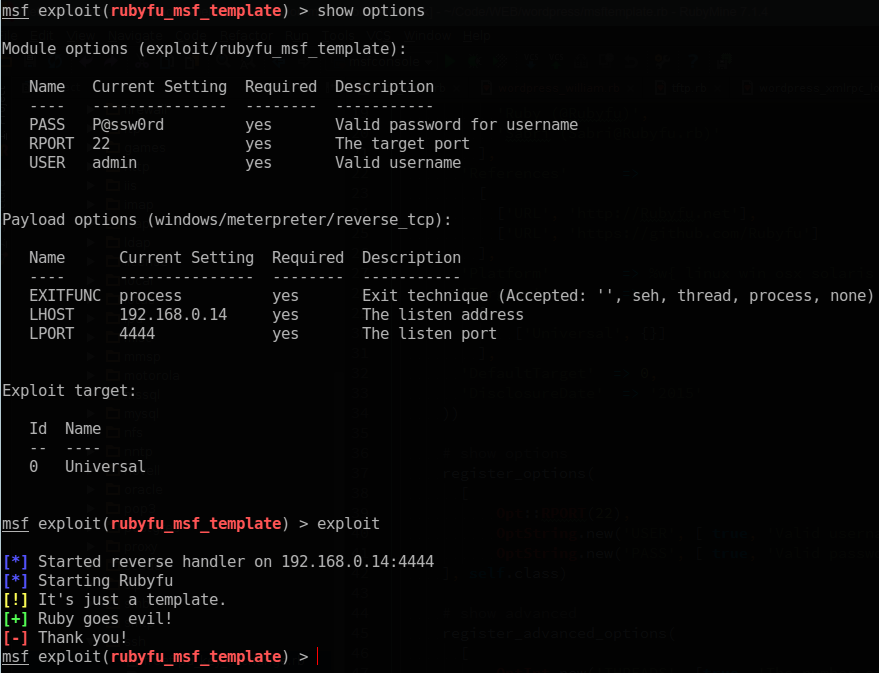

Metasploit
Code Design Pattern
Metasploit uses Facade design pattern which encapsulates/simplifies the complex part of the framework by implementing it as interfaces which makes development really easy and elegant. I found that the Wikipedia example of facades is descent to be presented
# Complex Parts | Computer framework
class CPU
def freeze; end
def jump(position); end
def execute; end
end
class Memory
def load(position, data); end
end
class HardDrive
def read(lba, size); end
end
# Facade | Interface
class ComputerFacade
def initialize
@processor = CPU.new
@ram = Memory.new
@hd = HardDrive.new
end
def start
@processor.freeze
@ram.load(BOOT_ADDRESS, @hd.read(BOOT_SECTOR, SECTOR_SIZE))
@processor.jump(BOOT_ADDRESS)
@processor.execute
end
end
# Client (The Developer want to use the complex computer framework)
computer_facade = ComputerFacade.new
computer_facade.start
As you can see from the above code, the developer who wants to use the Computer framework don't have to deal with the complex codebase (classes, methods and calculations) directly. Instead, he will use a simple interface class called ComputerFacade which instantiate(as objects) all classes once you call it.
Another exist example in ruby language itself is open-uri standard library, which encapsulates net/http and uri libraries and makes theme looks like opening ordinary file.
To see how open-uri makes things easy, We'll write a code that send get request to Ruby.net and get the response with both regular and open-uri way
regular way
require 'net/http'
require 'uri'
url = URI.parse('http://rubyfu.net')
res = Net::HTTP.start(url.host, url.port) {|http|
http.get('/content/index.html')
}
puts res.body
facade way
require "open-uri"
puts open("http://rubyfu.net/content/index.html").read
More about Facade
- Practicingruby | Structural Design Patterns
- Wikipedia| Facade Pattern#Ruby
- Sourcemaking | Facade Design Pattern
Metasploit Structure

As you can see in figure above, Metasploit libraries are working as interface serves all modules, interfaces, tools and plugins. That's exactly represents what we've explained in Code Design Pattern.
mkdir -p $HOME/.msf4/modules/{auxiliary,exploits,post}
Absolute module
Here is a very basic structure of a general module.
I'll Add some comments for explanation purpose.
##
# This module requires Metasploit: http://www.metasploit.com/download
# Current source: https://github.com/rapid7/metasploit-framework
##
require 'msf/core'
### Module Type ###
class Metasploit3 < Msf::Exploit::Remote
####################
### Module Requirements ###
include Exploit::Remote::Tcp
####################
### Exploit Rank ####
Rank = ExcellentRanking
####################
### Module Information
def initialize(info = {})
super(update_info(
info,
'Name' => 'Absolute MSF template',
'Description' => %q{This is an absolute MSF template that shows how all modules look like},
'License' => MSF_LICENSE,
'Author' =>
[
'Rubyfu (@Rubyfu)',
'Sabri (@KINGSABRI)'
],
'References' =>
[
['URL', 'http://Rubyfu.net'],
['URL', 'https://github.com/Rubyfu']
],
'Platform' => %w{ linux win osx solaris unix bsd android aix},
'Targets' =>
[
['Universal', {}]
],
'DefaultTarget' => 0,
'DisclosureDate' => '2015'
))
# Module Options | show options
register_options(
[
Opt::RPORT(22),
OptString.new('USER', [ true, 'Valid username', 'admin' ]),
OptString.new('PASS', [ true, 'Valid password for username', 'P@ssw0rd' ]),
], self.class)
# Module Advanced Options | show advanced
register_advanced_options(
[
OptInt.new('THREADS', [true, 'The number of concurrent threads', 5])
], self.class)
end
####################
### Module Operations ###
def exploit # or 'run' for post and auxiliary modules
print_status('Starting Rubyfu')
print_warning("It's just a template.")
print_good('Ruby goes evil!')
print_error("Thank you!")
end
####################
end
The result is

Load Metasploit module
To load/reload the Metasploit module you're working on, you can put the script in your user's Metasploit path or in the Metasploit framework path
User's Metasploit path
~/msf4/modulesMetasploit framework path
metasploit-framework/modules/
To make Metasploit load/reload the script use one of the following ways
- Exit from msfconsole then run it again
- use
reload_allto reload all modules - If your module is previously loaded and you made changes on it just use
reloadbut you have to be using the module, in another workuse [YOUR MODULE]
Note: It's really important to know the official Metasploit development documentation ( http://www.rubydoc.info/github/rapid7/metasploit-framework/ )